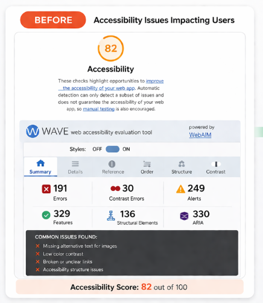

50+
Websites audited & delivered
ADA & WCAG 2.2 AA Section 508 EAA / AODA / UK
Work directly with an accessibility specialist on a manual audit, practical WCAG 2.2 AA fixes, and retesting for your WordPress, Shopify, Magento, or custom website.
Check common issues with the free self-check
Manual testing. Practical code fixes. Retesting. No automated-only report.
Recent Project Experience
Selected websites from recent accessibility projects. Where a client requires confidentiality, project details remain protected.
Accessibility services
Get a manual review, practical fixes in your existing platform or codebase, and retesting of the agreed work. Scope and deliverables are clear before a project begins.
Manual WCAG 2.2 AA testing of agreed templates and user journeys, with prioritized findings, screenshots, user impact, and developer-ready recommendations.
Hands-on fixes for WordPress, Shopify, Magento, and custom HTML, CSS, JavaScript, React, or Vue—followed by retesting of the agreed changes.
PDF accessibility review and remediation for tags, reading order, headings, tables, links, forms, and document navigation.
Fix barriers in Shopify, Shopify Plus, WooCommerce, and Magento product pages, navigation, forms, carts, and checkout journeys. See Shopify accessibility audits and fixes.
Website improvements
Anonymized examples of audit and remediation work. Client identities stay private; automated scan scores are useful signals, not proof of WCAG conformance.


Keyboard navigation, focus behavior, and interactive controls made parts of the storefront difficult to use.
Improved keyboard interaction, visible focus, semantic HTML, ARIA, and accessible component behavior.
Retested the affected interaction flow while preserving the original visual design.
WCAG remediation
Audit findings, code-level fixes, and handoff support for WordPress themes, plugins, forms, and keyboard interactions.
Measured improvement
A client reported accessibility rating improvements from 88 to 96 on desktop and 86 to 92 on mobile. Tool ratings are not a WCAG conformance verdict.
PDF accessibility
PDF structure, reading order, headings, tables, links, form fields, and navigation improved for assistive-technology users.
Client feedback
Clients work directly with me for manual testing, developer-ready findings, code-level remediation, and retesting.
Recent project experience includes The Poplight, a Shark Tank USA-featured business, and Menchie’s.
Start with a free page reviewHimanshu laid out a clear plan based on an audit of my two websites and executed everything in a matter of days.
Prompt, courteous and very fast. The work was delivered clearly, and we are continuing with the next phase.
Great to work with—very understanding of what needed to be done and clear in communication. I will use him again.
Free accessibility review
Share one important page—such as a homepage, product page, or checkout. I’ll manually review it and send three practical findings within 24–48 hours. This is an introduction, not a full-site audit.
Enter the page URL and an email address where I can send the findings.
One page, three findings, no commitment. Paid audits and code fixes are scoped and quoted separately. See the privacy policy.
I support WCAG 2.2 work for ADA and Section 508 projects in the US, the EAA in Europe, AODA in Canada, and UK Equality Act / PSBAR expectations. The relevant standard and scope are agreed before work begins.
Yes. You can request a manual audit, code-level remediation, retesting, or a scoped combination. The deliverables are agreed before work starts.
Yes. Start with a focused review of your highest-priority pages or user journeys. I’ll quote the agreed work upfront, and you can decide whether to proceed or expand the scope later.
Free 3-issue review
Request three findings on one page, or contact me to scope an affordable paid accessibility audit or remediation project.